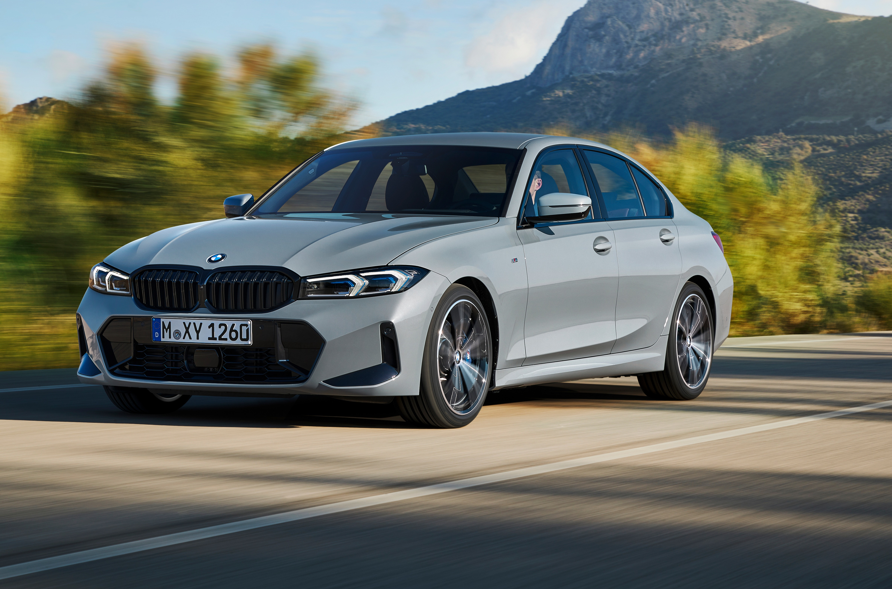
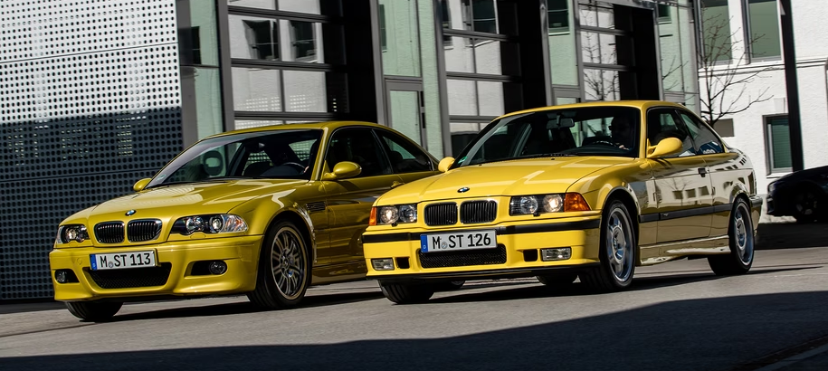
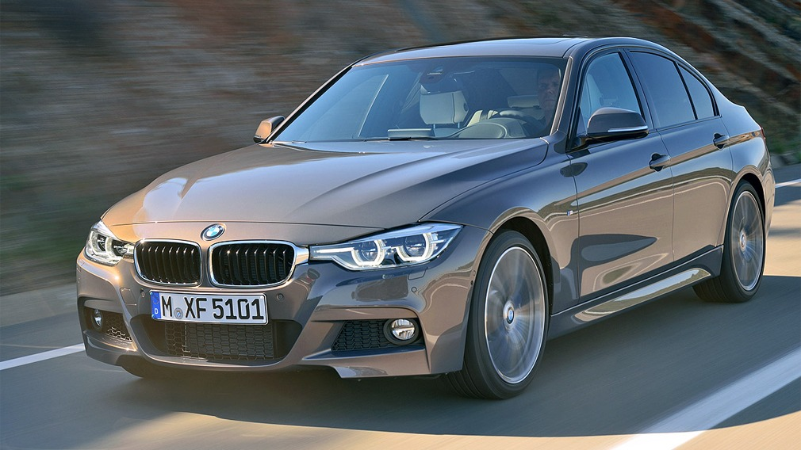
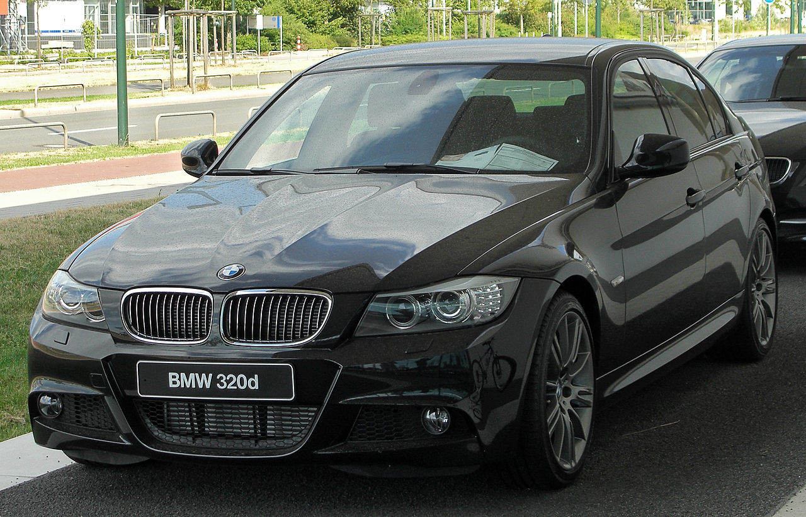
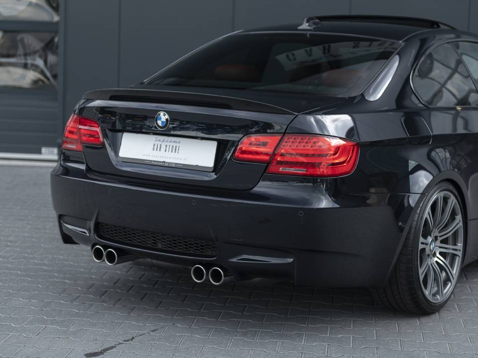
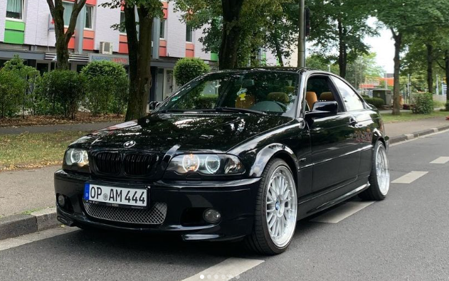
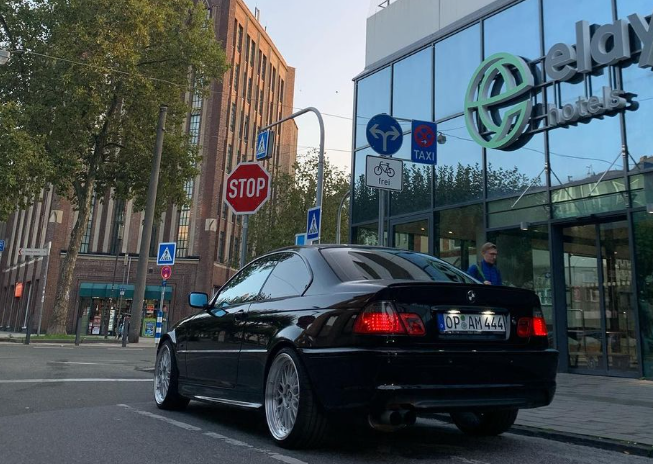
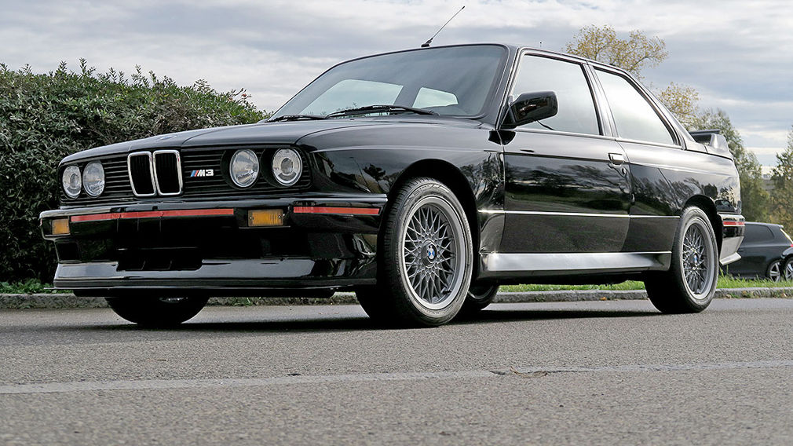

Der BMW 3er ist ein Premium-Mittelklasse Fahrzeug, welches seit 1975 von BMW hergestellt wird.
Er ist in der Regel als Limousine oder Touring (Kombi) erhältlich, obwohl es auch eine dreitürige Version als Coupé oder Cabrio gibt.

Der 3er BMW ist in verschiedenen Motorvarianten erhältlich, darunter Benzin-, Diesel- und neuerdings auch Hybridmodelle.

Vorteile des BMW 3ers :
Fahrdynamik
Sportlichkeit
Technologie
Zuverlässigkeit
Relativ Günstig im Unterhalt
Nicht zu groß nicht zu klein für Parkhäuser oder Parkplätze.
Mittelmäßige Attribute des 3ers:
Mittelmäßig teuer Einkaufspreis
Solides Platzangebot, jedoch etwas eng für große Menschen
Preis Leistung in Ordnung


Nachteile des BMW 3ers:
Oft von Vorbesitzern Schlecht behandelt
Wertverlust
Sehr oft vertreten, wenig individualität
 
Fazit: Ein Preis Leistung solider Alltagswagen, jedoch muss man genau hinschauen welchen man kauft. Das Spekrtum reicht von Sportcoupé bis Alltags Kombi/Limousine.
